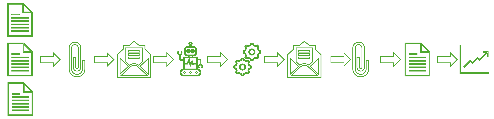
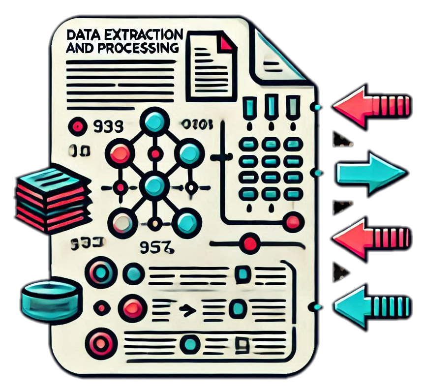

¿Cómo funciona?
Envía tus archivos al bot Anselmo por correo electrónico, y recibe los resultados procesados en minutos.

Características
-

Extracción y procesamiento de datos
Extrae, limpia y transforma información desde hojas y documentos.
-
Generación de reportes y gráficas
Produce reportes listos para compartir a partir de tus archivos.
-
Consolidación de archivos
Une y organiza múltiples archivos en una salida coherente.
-
Automatización de tareas periódicas
Repite procesos recurrentes por correo sin trabajo manual.
Un ejemplo
Anselmo nos ayudó a reducir de 4 horas a 5 minutos el tiempo necesario para consolidar pedidos.
Caso de uso · consolidación de pedidos
Preguntas frecuentes
¿Qué tipos de archivos procesa Anselmo?
Anselmo trabaja con archivos de Excel, Word, PowerPoint y texto.
¿Cómo se personalizan las tareas?
Nos reunimos con el cliente para entender sus necesidades y programar las soluciones específicas.
¿Cuánto cuesta el servicio?
Contáctanos para una cotización personalizada.
Contacto
Para más información, escríbenos: